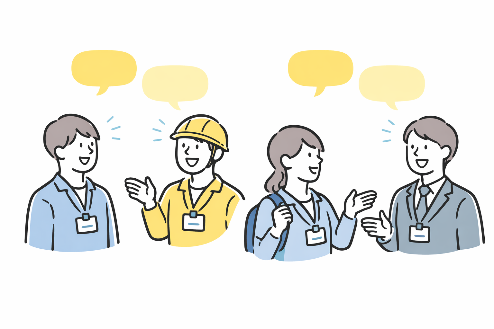

プログラムの全体像、参加企業の紹介、インターンシップに向けた準備について説明します。参加者同士の顔合わせも行います。
「徳島」で働く選択肢を、
あなたの中にプラスするインターンシップ
ミライ
キャリア
JOURNEY
ミライキャリアJORNEY
とは？
CONCEPT
高校生が地域の企業で働く姿をより具体的に思い描けるよう、インターンシップを通して企業の魅力を直接知るプロジェクトです。地元・徳島で働くことを知り、仕事にふれながら、進路や将来について考えるきっかけをつくります。地域と次世代をつなぐ架け橋として、未来への一歩を踏み出してみませんか？
-

POINT.01
地元企業の魅力を、実際の現場で体感できる!
-

POINT.02
将来や進路を考える 視野が広がる！
-

POINT.03
コミュニケーション力が身につく！
「働くって、どんな感じなんだろう？」
そんな疑問を、実際の仕事にふれながら確かめてみませんか？
インターンシップでは学校では知ることのできない仕事や大人のリアルに出会えます。
地元・徳島で働く選択肢を知ることが、あなたの将来を考えるヒントになるはずです。
COMPANIES
参加企業
 総合建設業
総合建設業
株式会社 北島建設
徳島に根ざした建設会社。「建築」と「土木」の両面から、住宅や公共施設など地図に残る仕事のやりがいを、設計・施工の現場で学びます。
 自動車販売・整備
自動車販売・整備
アウトクラスカーズ
徳島発のカスタムカー専門店。ジムニーを中心とした車両販売・整備や、アウトドアライフの提案など、"好き"を仕事にする現場を体感できます。
 機械レンタル・販売
機械レンタル・販売
喜多機械産業株式会社
まちづくりを支える建設機械のレンタル・販売・修理を展開。多種多様な機械を扱い、インフラ整備の裏側を支える重要な役割を体験します。
 建設コンサルタント
建設コンサルタント
株式会社フジタ建設コンサルタント
地域の社会基盤を支える技術者集団。道路や河川などの測量・設計・調査を通じて、安全で安心なまちづくりの基礎（プランニング）を学びます。
デザイン・WEB制作
株式会社AND
デザインとITで地域を元気にするクリエイティブ企業。Webサイト制作やイベント企画など、アイデアを形にして発信するプロセスを体験します。
 医療用繊維製造
医療用繊維製造
東光株式会社
医療用弾性ストッキングやサポーターの製造販売メーカー。国内一貫生産にこだわり、確かな技術で人々の健康を足元から支えるものづくりを体験します。
 教育保育
教育保育
ナーサリー富田幼児園
「生きる力」を育む幼児教育・保育の現場。子どもたち一人ひとりと向き合い、成長を支える先生の仕事のやりがいや責任を肌で感じられます。
 スポーツビジネス
スポーツビジネス
徳島ヴォルティス株式会社
Jリーグ加盟のプロサッカークラブ運営。試合運営、広報、ホームタウン活動など、スポーツを通じて地域を活性化させる仕事を学びます。
 放送局（ラジオ）
放送局（ラジオ）
株式会社エフエムびざん
地域密着のコミュニティFM放送局（B-FM791）。ラジオ番組の制作や生放送の現場に触れ、声と音で地域情報を届けるメディアの役割を体験します。
 鉄骨製造業
鉄骨製造業
株式会社 応神鉄工
建物の骨組みとなる「鉄骨」の製造。巨大な建築物を支えるダイナミックな鉄骨加工技術や、CADを使った図面作成など、ものづくりの真髄に触れます。
SCHEDULE
OVERVIEW
プログラム概要
-
対象者
・徳島県内の高校1年生
・定員：約30名
-
特徴
・1日の起業体験
・社員との対話
・動画制作体験
・プレゼン機会
・多様な業種を知る
-
メリット
・地元企業を直接体験
・働くことへの理解
・視野の拡大
・コミュニケーション力向上
・仲間との出会い
Q&A
よくある質問
-
参加費用はかかりますか？
参加費用は無料です。ただし、会場までの交通費は各自でご負担いただきます。
-
全日程に参加する必要がありますか？
はい。説明会からインターンシップ、動画編集ワークショップ、最終発表会まで、すべての日程に参加できることが条件となります。
-
インターンシップ先の企業は選べますか？
希望調査を行い、できる限り希望に沿うよう調整しますが、参加人数の都合上、必ずしも第一希望の企業に配属されるとは限りません。
-
服装や持ち物はどうすればいいですか？
説明会では詳細をお伝えしますが、基本的には動きやすい服装（制服可）、筆記用具、ノート等をご用意ください。企業によっては作業着等を貸与いただく場合もあります。
-
保護者の同意は必要ですか？
はい。参加にあたっては保護者の同意が必要です。申込時に保護者の同意書を提出していただきます。

あなたの「みらい」一緒につくりませんか？
参加申込はこちら
COMMENTS
参加者の声
城南高校 2年生（参加時1年生）
「将来のことをぼんやりとしか考えていなかったのですが、このインターンシップを通じて働く』ということが具体的にイメージできるようになりました。特にIT企業での体験が印象的で、プログラミングの面白さを知ることができました。動画編集やプレゼンの経験も自信につながりました。」
小松島高校 3年生（参加時2年生）
訪れた企業ごとに、働く環境や仕事の進め方の違いを実際に体験し、同じ仕事でも業界や企業によって雰囲気や求められる力が大きく異なることを知りました。特にチームで協力する場面を通して、コミュニケーションの大切さを実感し、今後は日常生活でも周囲との関わりを意識していきたいと思いました。
科学技術高等 2年生（参加時1年生）
インターンシップツアーを通して、仕事は一人で行うものではなく、多くの人の役割が重なって成り立っていることを知りました。社員の方のお話を聞く中で、失敗や工夫を積み重ねながら仕事に向き合っている姿が印象に残り、働くことへの考え方が少し変わりました。